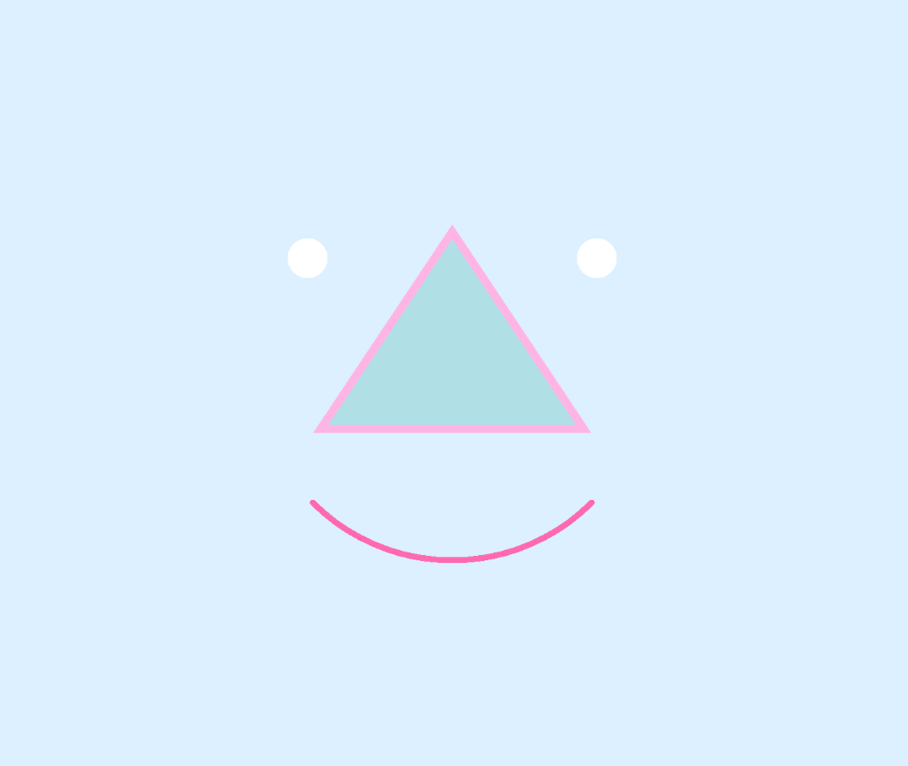
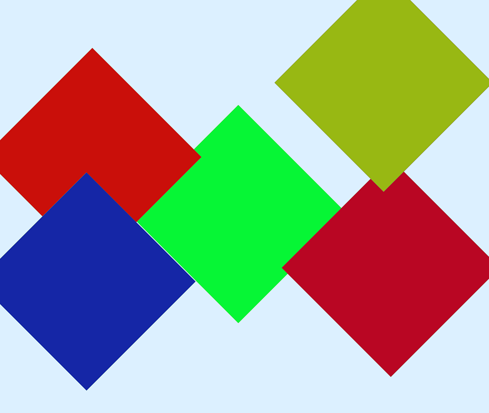
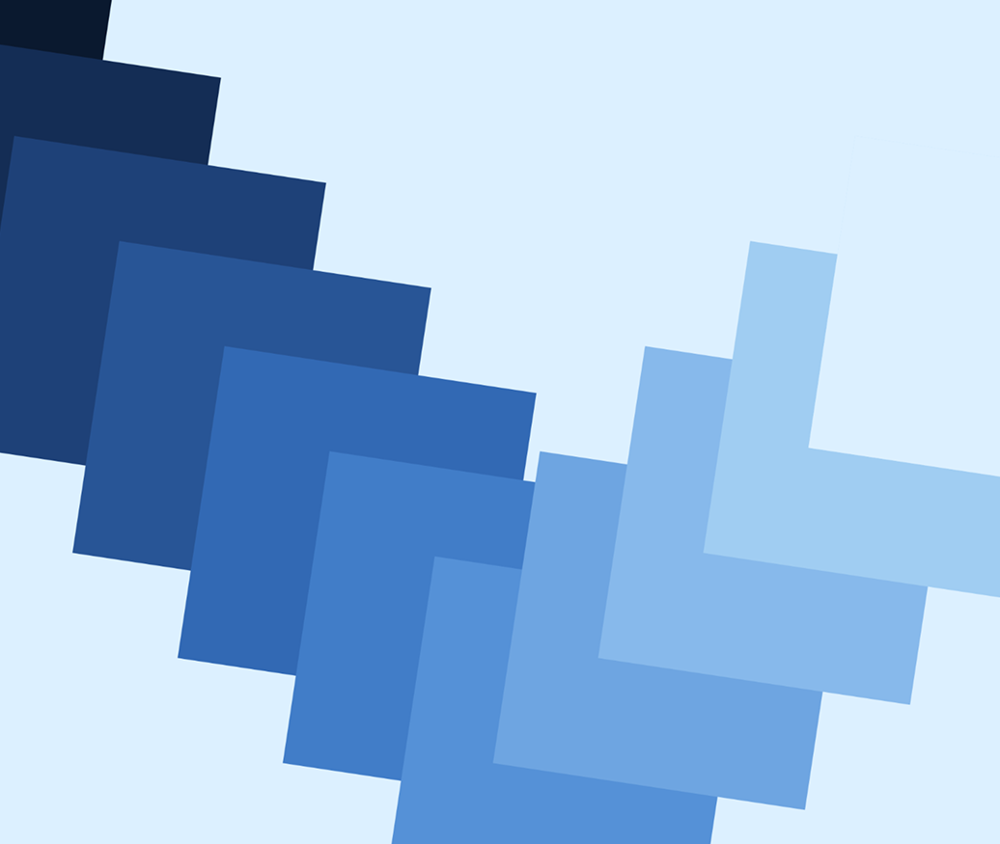
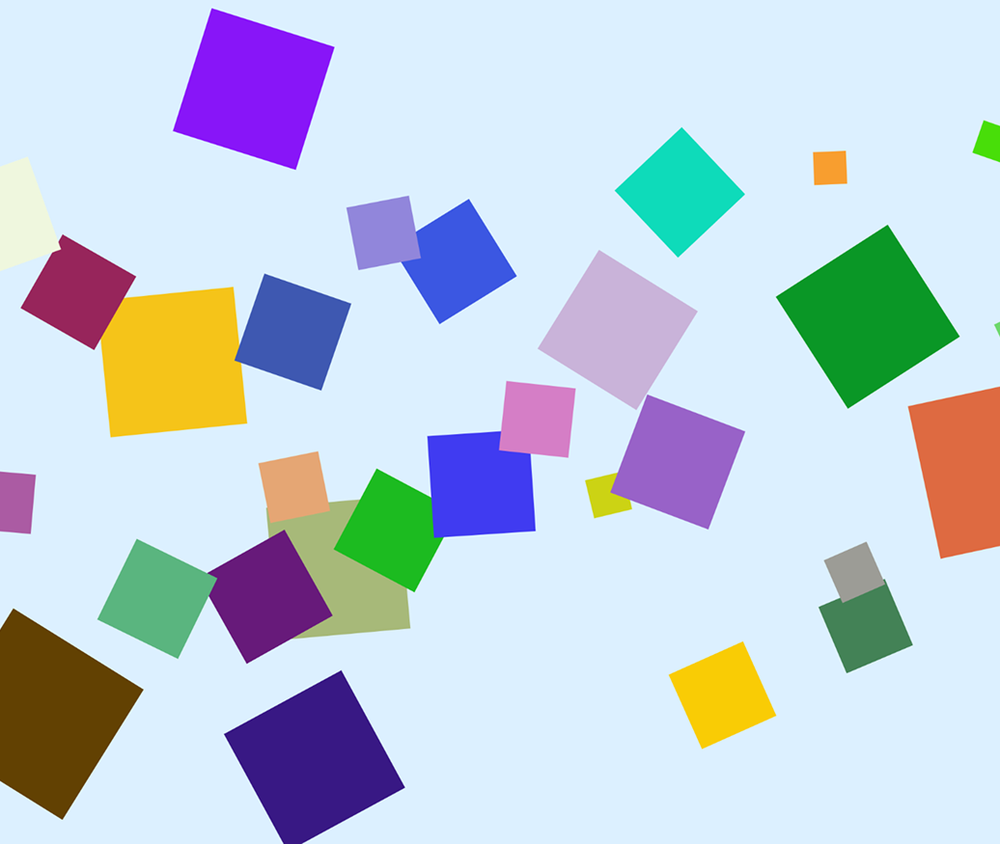
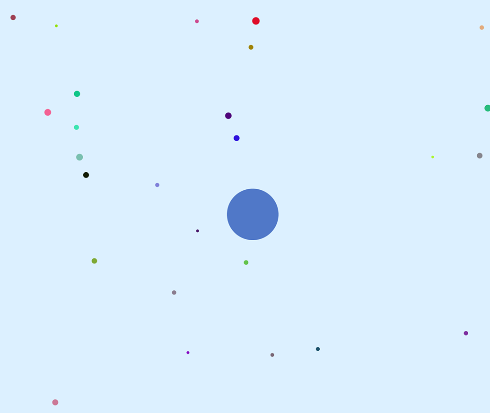

Drawing — Creative Coding Assignments

An initial exploration of drawing different geometric shapes using p5.js.
View Project →

I tried using mouse clicks and rotation to make diamond-shaped squares appear where I clicked, with random colors.
View Project →

Try creating a nice color gradient and a dynamic rotation effect.
View Project →

I tried making squares appear when I clicked the mouse, with a random rotation angle and a random size each time. Make it looks like small fireworks or glitter.
View Project →

I wanted to try having different shapes and effects appear when I clicked anywhere on the screen.
View Project →
1. week2.1 version
For the first version, I followed the recorded lecture and tried out some of the shape-related code tools we learned about in class. This helped me get more familiar with the basic process.I noticed that it was sometimes hard to control exactly where the shapes appeared, and they often ended up in slightly different places than I expected. I also didn’t have a very clear idea of how large a pixel is, so I wasn’t sure what a shape would actually look like when I entered a value like 100.
2. week2.2 version
For the second version, I wanted to try using mouse clicks and rotation. I wanted the diamond-shaped squares to appear at the location where I clicked, with random colors.At first, I couldn’t figure out why clicking the mouse wasn’ t doing anything. After looking through my code for a while, I realized that I had forgotten the parentheses after the mousePressed function. It made me pay more attention to the details of how the functions are written.
3. week2.3 version
For the third version, I wanted to try creating a nice color gradient and a dynamic rotation effect. I experimented with the position of the squares and the values in fill() to create a row of rotating squares that gradually changed from dark blue to light blue. At first, I didn’t add translate() between each push() and pop(), so I found that all the shapes were rotating around the same center point togeter. After adding different translate() values between each push() and pop(), I was able to fix the problem and make each square rotate around its own position.
4. week2.4 version
For the fourth version, I wanted to create an effect that looks like small fireworks or glitter. I tried making squares appear when I clicked the mouse, with a random rotation angle and a random size each time.
5. week2.5 version
For the fifth version, I wanted to try having different shapes and effects appear when I clicked anywhere on the screen, and repeat this process. I wanted the triangle in the screen to gradually become bigger after the first click, change into a circle after the second click, and show random colorful small dots after the third click. When the small dots appeared, I originally wanted them to slowly appear and slowly disappear, but now they look like they are flickering too quickly and are not very soft.